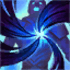
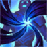

Aatrox
La espada de los oscuros
Aatrox era un noble guerrero Ascendido de Shurima que, tras la caída de su imperio,
fue corrompido y encerrado en su propia espada.
Escapó siglos después al poseer cuerpos mortales, convirtiéndose en un Azote Viviente que busca destruir todo,
incluso a sí mismo, en un intento desesperado por liberarse de su maldición.
Habilidades


 
